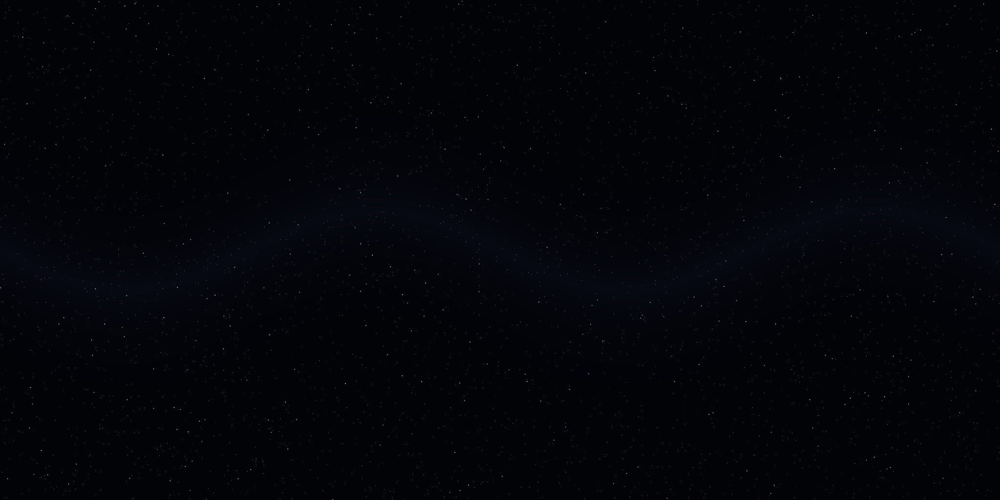
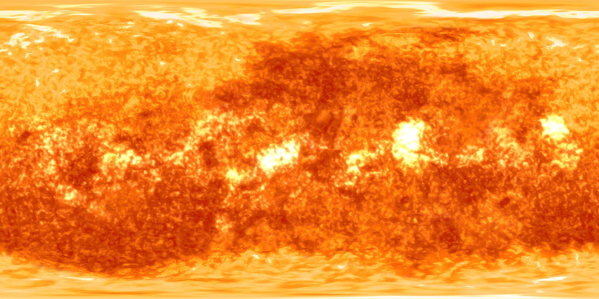
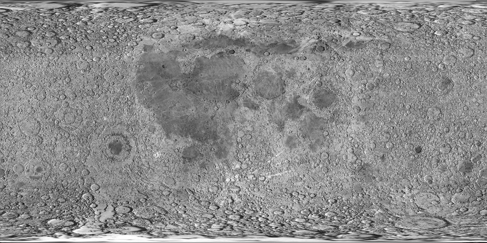
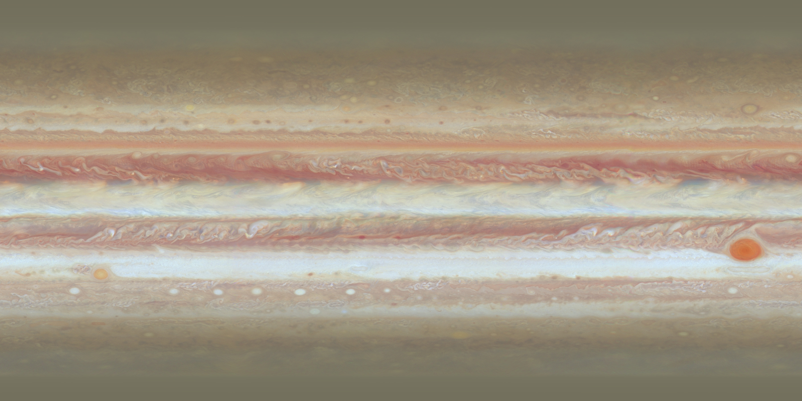
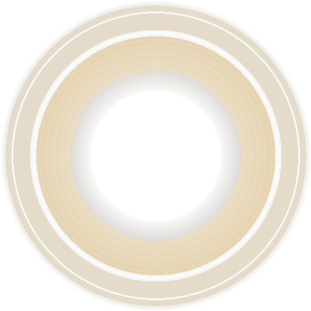

| Left Click + Drag | Rotate 360° celestial viewpoint |
| Scroll Wheel | Zoom camera closer / farther |
| W A S D | Fly camera through space |
| Click Planet / Strip | Select and open detailed planetary dossier |
| Spacebar | Pause / Resume orbital simulation |
| R | Reset planetary positions to starting alignment |
| O / L | Toggle orbital path lines / 3D labels |
| V / T | System Overview / Polar Map perspectives |
| 1 – 8 | Direct jump to Mercury through Neptune |
| Esc | Close dossier / return to system overview |
| One-Finger Drag | Rotate 3D perspective around solar center |
| Pinch Gesture | Zoom in and out smoothly |
| Tap Celestial Body | Inspect body and open responsive bottom sheet |
| Headset Tracking | Natural 6DoF / 3DoF head orientation and movement |
| VR Laser Controller | Point ray at celestial body and pull trigger to select |
| VR Info Billboard | Holographic 3D telemetry card floating in virtual space |
In nature, distance ratios (30 AU vs 0.39 AU) and diameter ratios (109:1 for Sun vs Earth) make exact linear rendering on desktop displays impractical. Solaris utilizes an interactive visual scaling model so every planet, ring, and orbit remains visible, distinguishable, and accessible.




